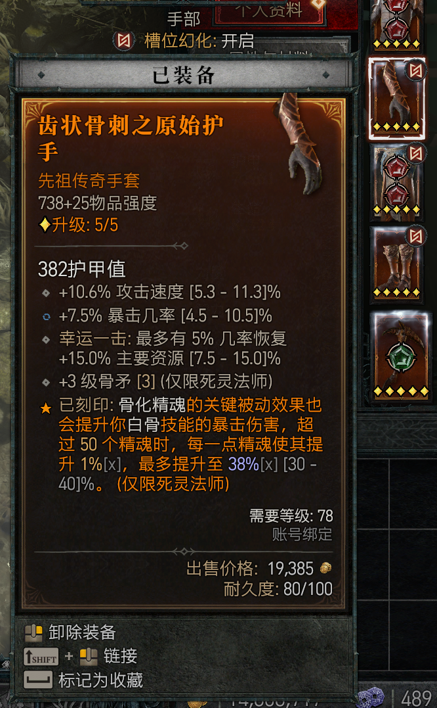

今年退出了大坑 MapleStory（冒冒），终于有时间可以玩一玩单机了，之前还在冒冒的时候不练级每天也要花半到一个小时在日常上，而且不像手游可以利用通勤等琐碎的时间，实在是让人又爱又恨。
这次回坑冒冒大概玩了两年，最后的进度停在了解锁创世武器并且击败 Seren。因为遇到了好多真心对待游戏的朋友，我攻略 boss 的时候总是有伙伴的帮助，感谢感谢。
冒冒把练级作为核心玩法之一，确实是劝退普通玩家的主要原因，但是优秀的音乐和设定基础，又让 90 年代的愿意为他付出时间，我一律劝退对这个游戏感兴趣的人，如果你真的是它的受众，那么再怎么劝退也没有用。
我们团队第一次过黑魔法师的记录：https://www.bilibili.com/video/BV17W4y167AM/
那么接下来就盘点今年玩的其他游戏：
空の軌跡 FC&SC
战斗系统比较单调，还遇到过几次闪退/卡死导致进度丢失的情况（没有自动存档），但是不错的剧情和音乐，奠定了轨迹系列的优秀基础，没有玩 3rd 有几个原因，一是小艾和小约的故事就像完成了一个章节一样，看到这里已经对他们的未来有所担心，二是没有这么喜欢神父这个角色（实际在 SC 中也没怎么使用他），Steam 上的版本打语言补丁麻烦而且可能会遇到 bug。
旅行不是 from A to B，如果闷头走主线的话，会错过很多有趣的故事。
ペルソナ5スクランブル(P5S)
上手之后战斗手感还不错，可以无限进出监狱补血导致甩技能流玩的很爽，主角团走出东京知乎带你来了一场日本环游，本来对东北毫无兴趣的，现在觉得得去仙台吃一趟牛舌了。
个人感觉游戏后期的节奏比较快，而对于玩过 P5 本体的玩家这个剧情太熟悉了，像是把样板戏又演了一遍。
如果没有本体的加持，P5S 是很一般的，但是老角色再登场以及保留了庞大的面具系统，让这个游戏玩起来非常有趣。
eden*
游戏很短，虽然是 sad story，但是我并没有对结局难以接受，minori 营造了一个让人平静的游戏环境，让玩家接受随星球一起离去。游戏没有过多渲染シオン的悲剧情节，通过世外桃源让玩家想象权力控制的恐惧。
故事中的角色都将自身的情感摆在了比权力命令更高的位置上，深表赞同。
CRISIS CORE -FINAL FANTASY VII- REUNION
作为前传登场的重制版篇章，ザックス的老虎机系统提供了各种奇怪的技能和续航，战斗的爽快感很不错。
这作怪物使用蓄力大招的时候需要通过累计伤害来削减大招对自己造成的伤害，如果怪物在你的长后摇时使用蓄力大招，就会造成没有时间去打累计伤害，吃到 100% 大招的情况（可能直接暴毙），以及在手上捏有大招和没有大招的时候打断能力差别太大，这个点不是很爽。
在第一部重制版中，克劳德一直是团队作战，而ザックス则没有那么多好队友，战斗都是和怪物的单挑，玩起来还是挺寂寞的。
最后游戏流程太短了，我感觉自己也算慢慢打的类型了，结果不到 20h 就通关了。那些要摸完所有宝箱的支线任务，暗雷遇怪，有的地图宝箱藏的很隐蔽还挺折磨人的，实在是没有耐心做完…
Monster Hunter Rise Sun Break
只有认真玩怪猎了，才能感受到这个游戏庞大的战斗系统，一个武器不玩几百小时都不好意思说自己会了，目前怪猎有十四种武器，真是多少时间都不够玩的。
除了方便和朋友联机，switch 玩起来还是不太爽的，虽然卡婊优化已经很不错了，炎火村快速移动的速度很棒，但是进图加载和某些场景的掉帧还是令人无奈。
建议少看大佬速刷，那都是打过不知道多少次之后，对怪物的行动逻辑和伤害判定了如指掌的结果，对比自己重复被撞飞喝药就会有很强的失落感，反正我是用不好最强的大剑，根本打不到怪，玩玩轻弩重弩爽了就挺好的。
サクラの刻
作为最期待的续作之一，结果令人不太满意。
明明有很多新角色登场，最后变成了老角色返场秀，续作应该有新的故事，而不是后日谈般的讲些理所应当的事，在有前作音乐剧情的加持下，如此新作是不尽人意的。
本作在结尾还挖了个坑，还要做一部サクラノ響，希望可以看到新的故事，比较关注的是是否会是女性主角。
ポケットモンスター スカーレット
这次的宝可梦朱紫比前作剑盾好玩的多，自由的探索顺序，简化了那套古董养成系统，不错的剧情，优秀的太晶化系统，删除了暗雷系统。可以说只要你对宝可梦有一点兴趣，这作朱紫就能让你爽玩。
但是 GF 的技术力，导致朱紫没有做到 100 分，游戏可以优化的地方非常多，而且看起来也不像是这个年代的画面，有一些影响心情的小 bug。
Diablo IV
我是第一次接触以“刷”为核心玩法的游戏，刷了一个赛季其实还挺好玩的，当你改了一套配装、巅峰和技能之后，刷怪如游泳的感觉很爽。
刷子游戏如果不能爽，就只剩坐牢了，所以不要强迫自己去玩弱势套路，就得玩版本之子。
晒一张令我满意的装备吧。

ゼノブレイド2
我玩异度之刃的顺序是 3->1->2，其中 2 和 3 的战斗系统都很棒，玩了 2 之后，对于 3 能够如此大改战斗系统非常满意。1 的战斗系统就比较弱了，所以我只是当故事来看。
在打 2 之前玩了 1 还是对理解剧情有不少帮助的。从剧情深度上来说，2 可能是三作里最高的，可以说是 JRPG 的典范了，战斗系统没有用简单的回合制来敷衍了事。
JRPG 在讲述了一个很棒的故事之后，往往会发现所有的角色都是令人喜爱的，出于想要看到更多故事的想法，就会对游戏结束的太早感到可惜。